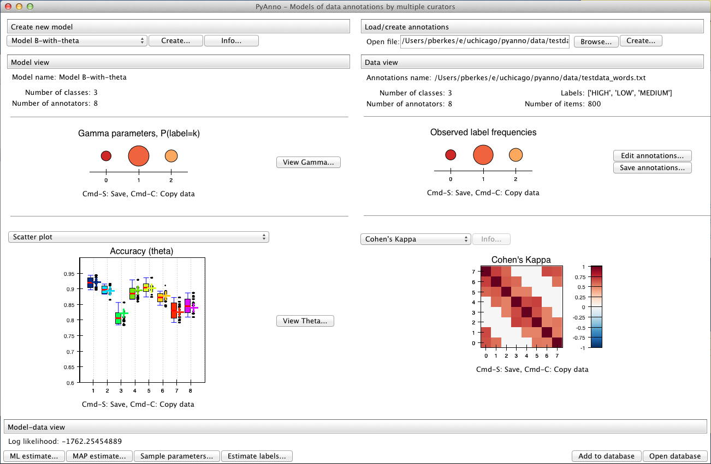
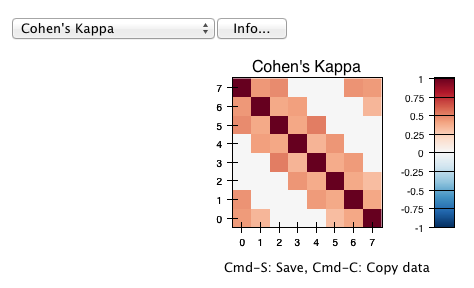
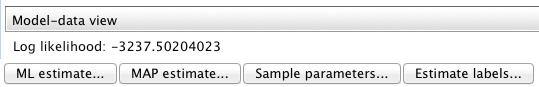
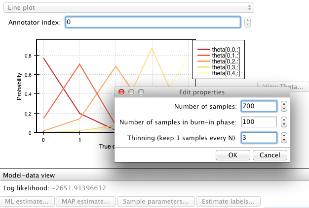
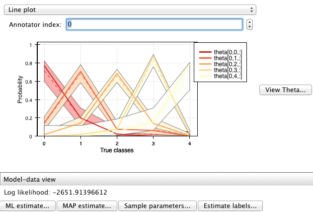
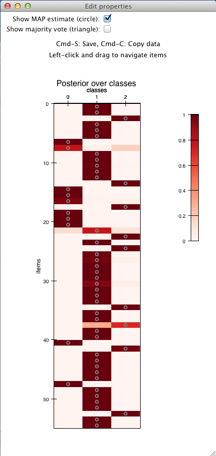
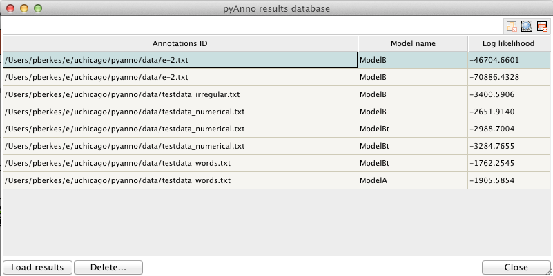

Using the library from the pyAnno GUI¶
Navigating the main window¶
This is the main window of the pyAnno GUI:
It contains three panels:
On the left side we find the model panel. At the top, there are controls to create a new model. Select the desired model from the selection box, and click on “Create...” to enter the basic parameters for the model, for example:

Just below, we find a summary of the model information, and a graphical display of the current model parameters:

On the right side we find the annotations panel. Open an annotations data file or create an empty annotation set from the file dialog at the top:

Once opened, the panel shows some basic information about the annotations:

Finally, the bottommost part of the panel displays standard statistics of annotators agreement and covariance:
At the bottom we can see the actions panel. If the current model and annotations are compatible (e.g., they have the same number of annotators, the panel will show the log likelihood of the data under the model given the current parameters, and wil also offer a number of actions:
From left to right, the buttons allow to estimate parameters by maximum likelihood (“ML estimate...”), or by maximum a posteriori estimate (“MAP estimate...”).
The third button allows to draw a number of samples from the posterior distribution of the accuracy parameters, which represent the correctness of the annotators.
After sampling, the model panel will show credible intervals around the parameters.
The last button, “Estimate labels...” computes the posterior probability of the “true” labels underlying the observed data, and show it as a plot in a separate window:
You can left-click and drag on the plot to examine all the data.
Plot tools¶
All plots on the main window offer these tools:
- To save a plot as displayed in the window, click on the plot and press Ctrl-S (Cmd-S on Mac). A dialog will open, asking for a destination file and the resolution of the saved image (in dpi).
- It is possible to copy the data underlying the plots by pressing Ctrl-C (Cmd-C on Mac). The data is copied on the clipboard as a Python string, which can be copied in a text file, or in a Python shell to further analyze it. For most plots, the copied data will be a numpy array. Make sure to type from numpy import array in your Python shell so that Python can create an array object when you paste the string.
The database window¶
In the bottom right part of the window there are two additional buttons that can be used to interact with the results database:

Clicking on “Open database” opens a new window showing the current contents of the database:

Each row of the table shows a pyAnno result: for each annotations set (first column), one can examine the models that have been applied to it (second column), sorted by decreasing log likelihood (third column).
To save the current results in the database, press “Add to database”. Vice versa, to load old results in the main window, select the corresponding row in the database window, and click on “Load results”.